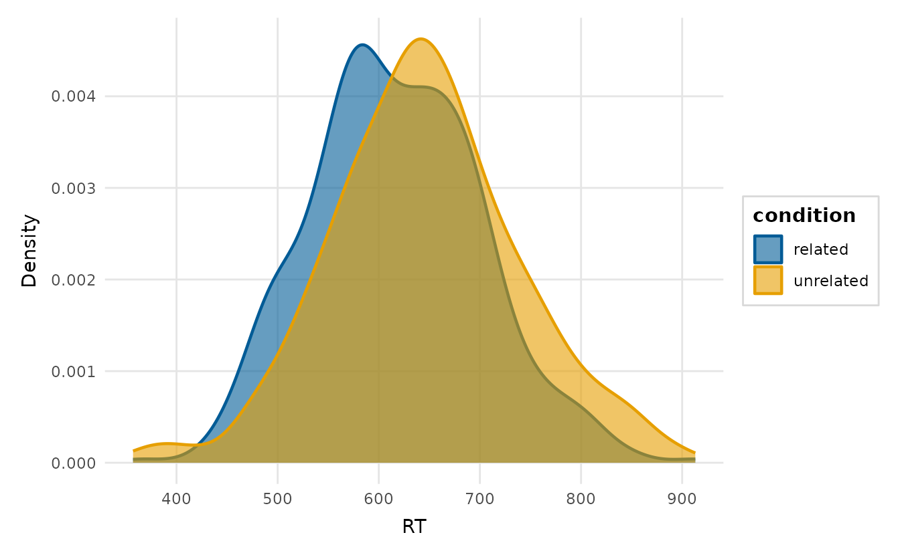
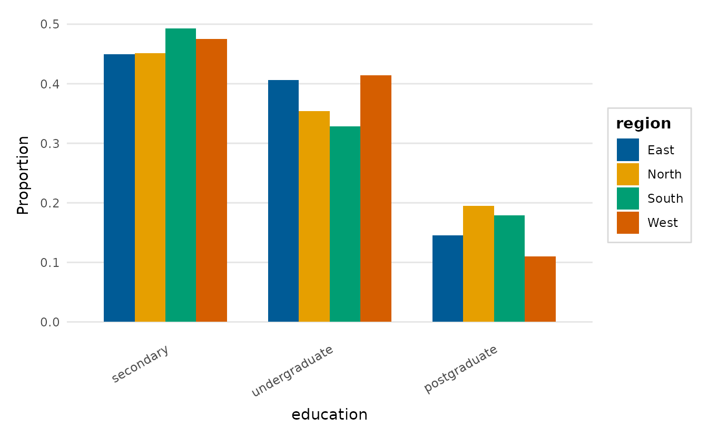
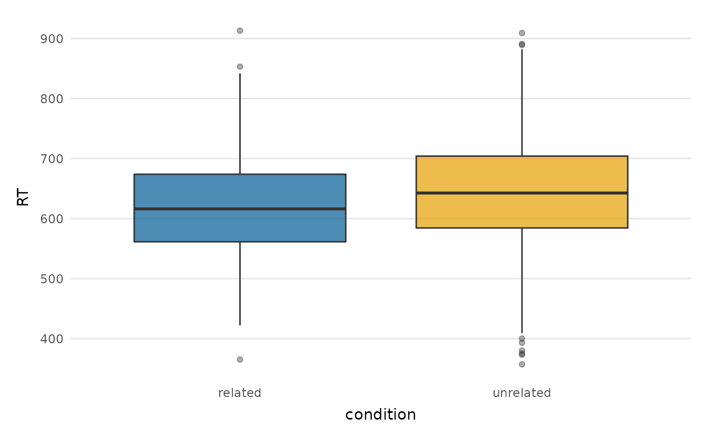
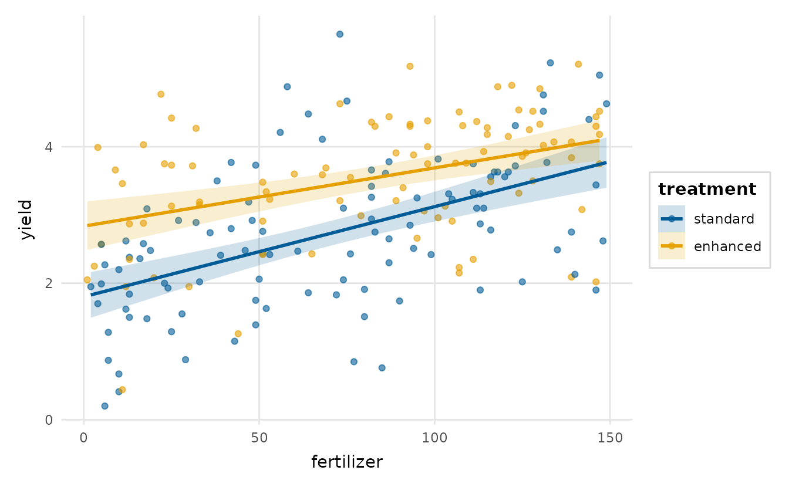
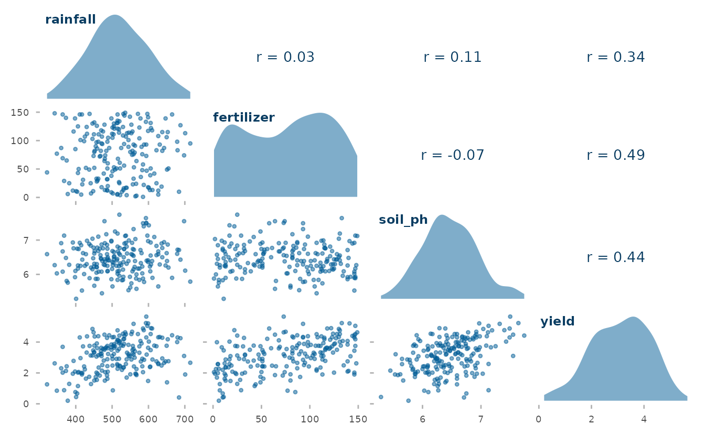
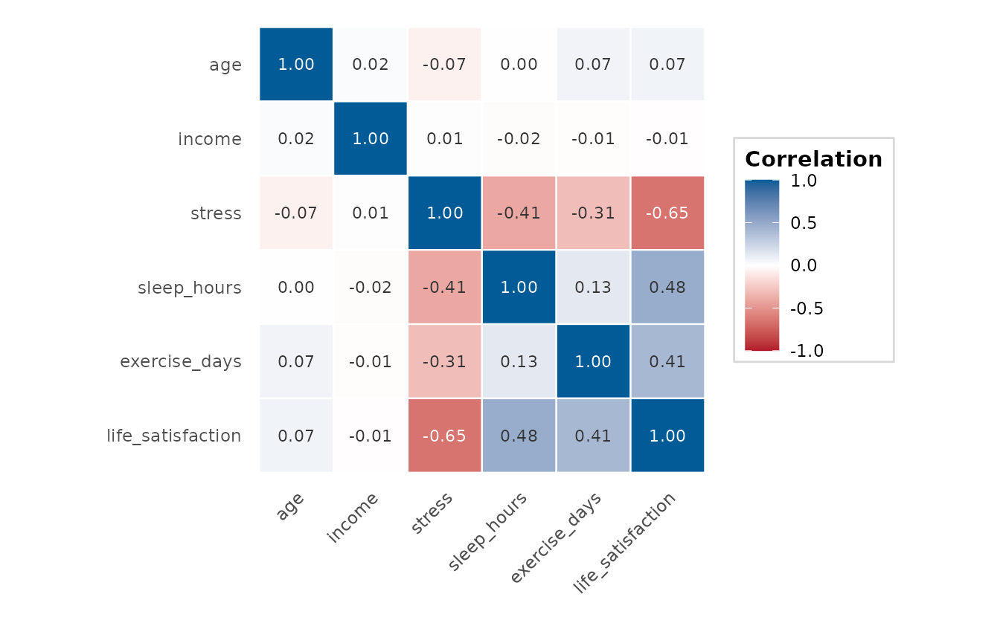
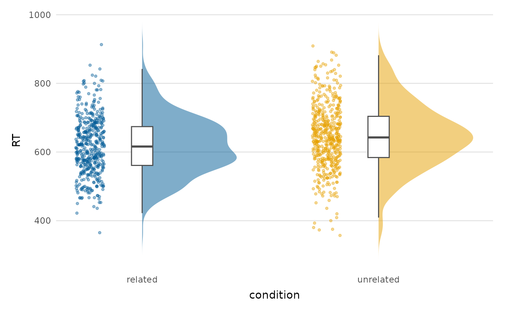
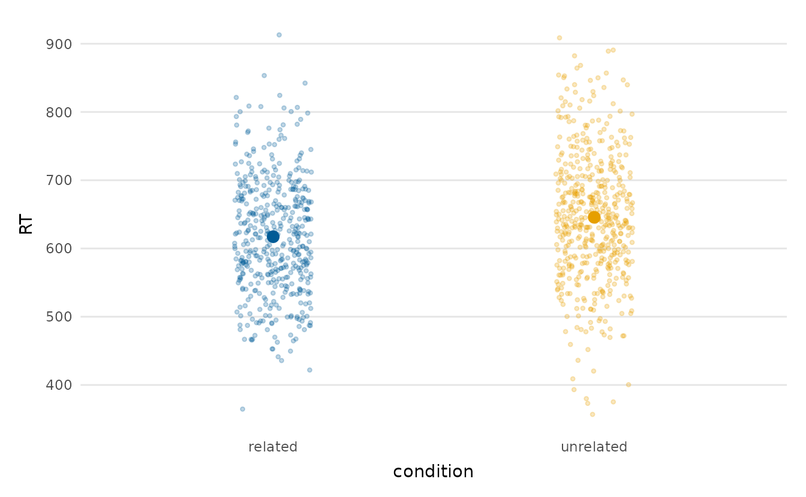
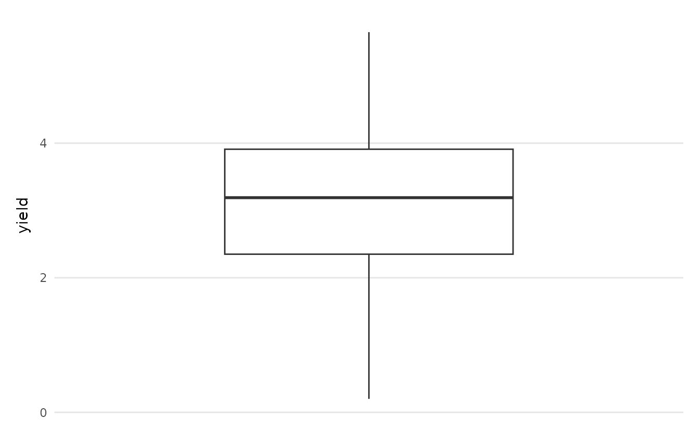
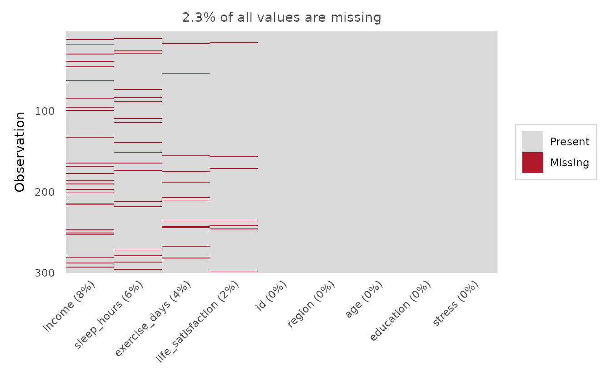

depictr provides a coherent set of exploratory plots and a descriptive table, all sharing the package theme and palette. Column names can be given quoted or unquoted.
One variable
explore_distribution() for a numeric variable,
explore_categorical() for a categorical one.
explore_distribution(lexical_decision, RT, group = condition, type = "density")
explore_categorical(wellbeing_survey, education, group = region,
proportion = TRUE, position = "dodge")
Two variables, any types
explore_bivariate() selects the appropriate plot
automatically: a scatter plot for two numeric variables, box plots for a
numeric variable against a categorical one, and a filled bar chart for
two categorical variables.
explore_bivariate(lexical_decision, condition, RT)
For a focused scatter with a fitted trend, use
scatter_trend():
scatter_trend(crop_yield, fertilizer, yield, group = treatment)
Many variables at once
explore_pairs() is a scatter-plot matrix;
correlation_heatmap() condenses the same information into a
single coloured grid.
explore_pairs(crop_yield, cols = c("rainfall", "fertilizer", "soil_ph", "yield"))
correlation_heatmap(wellbeing_survey)
Distributions across groups
raincloud_plot() shows the density, the box summary and
the raw points together, and group_comparison_plot() adds
the group means with confidence intervals over the raw data. By showing
the estimate alongside its uncertainty, the latter conveys whether the
groups differ more faithfully than a bar chart.
raincloud_plot(lexical_decision, RT, group = condition)
group_comparison_plot(lexical_decision, RT, condition)
Data quality: outliers and missingness
outlier_plot(crop_yield, yield)
missingness_map(wellbeing_survey)
A descriptive summary table
summary_table() builds a “Table 1”: mean (SD) for
numeric variables, counts and percentages for categorical ones,
optionally by group. It returns a plain data frame, ready for
knitr::kable().
tab <- summary_table(wellbeing_survey,
vars = c("life_satisfaction", "stress", "education"),
group = "region")
knitr::kable(tab)| variable | statistic | Overall | East | North | South | West |
|---|---|---|---|---|---|---|
| life_satisfaction | Mean (SD) | 5.0 (1.1) | 5.2 (1.0) | 5.1 (1.1) | 4.6 (1.0) | 4.9 (1.1) |
| stress | Mean (SD) | 4.0 (1.3) | 3.9 (1.2) | 3.8 (1.5) | 4.3 (1.2) | 3.9 (1.3) |
| education | secondary | 140 (47%) | 31 (45%) | 37 (45%) | 33 (49%) | 39 (48%) |
| undergraduate | 113 (38%) | 28 (41%) | 29 (35%) | 22 (33%) | 34 (41%) | |
| postgraduate | 47 (16%) | 10 (14%) | 16 (20%) | 12 (18%) | 9 (11%) |